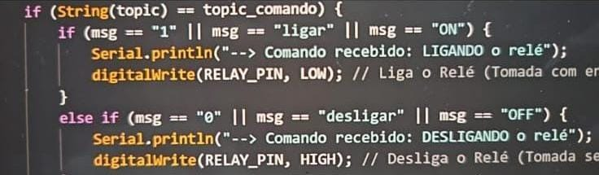
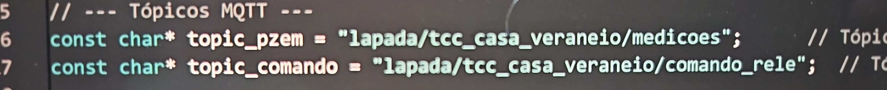
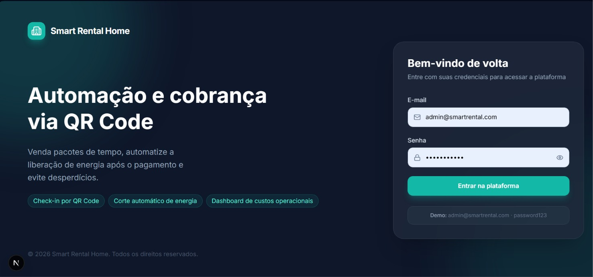
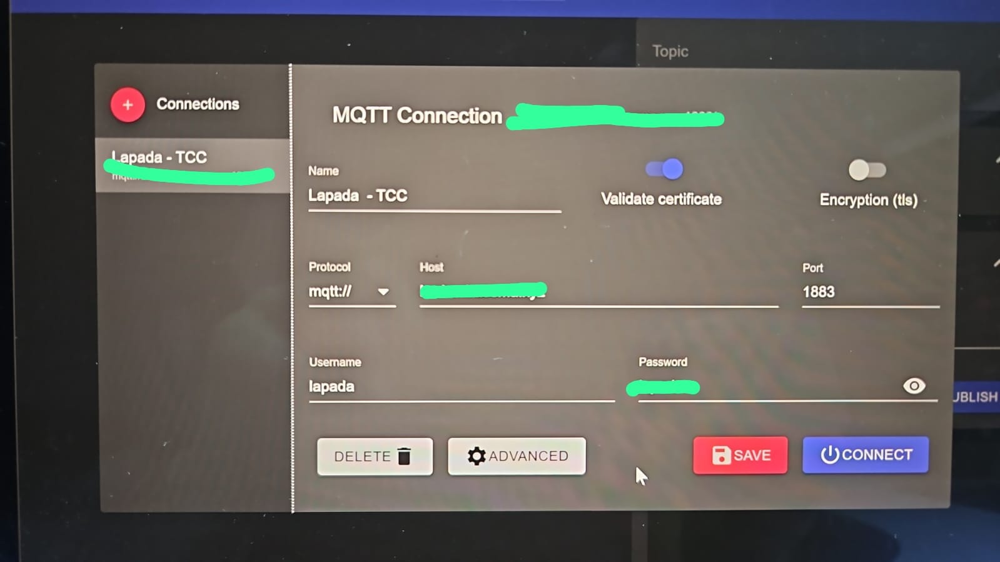

Meu trabalho de TCC. Se trata de um produto embarcado que é implantado na caixa geral de uma casa para mostrar medições elétricas,
criar estadias como em um airbnb e mostrar as informações de forma direta e prática para o dono.
Sobre o projeto
Esse foi o trabalho de TCC que eu meus colegas fizemos (nossa faculdade permite fazer o TCC com até 3 pessoas). Se trata
de um sistema embarcado com uma ESP32, que o locador coloca no registro geral da casa, e, após isso, o dispositivo consegue
fazer leituras elétricas de custo energético por hora, se certos cômodos estão com luz outro aparelho ligado, criar estadias
para alugar sua casa (por isso o foco para casas de veraneio), criar planos energéticos para o locatário escolher
(se quer só energia, ou energia + ar-condicionado, por exemplo), dentre outros. O foco é tudo ser visível num site que o dono
teria acesso, com dashboards interativos e diretos, mostrando de forma facilitada tudo que ele precisa saber energeticamente
da suas casa e suas estadias.
Minha participação
Minha participação nesse TCC foi o embarcado em si e o documento para ser entregue. Em relação ao embarcado, trabalhei no código
usando C++ para trabalhar com o ESP32, criando a lógica por trás do o que ele fará e como enviará para o Broker MQTT
Minha participação no TCC foi voltada ao desenvolvimento da lógica de programação em C++, utilizando o ambiente
Arduino IDE para programar a ESP32, responsável por realizar as leituras elétricas no registro geral da residência.
Fiquei encarregado de desenvolver o código para processar essas leituras e organizar o envio dos dados ao broker MQTT,
permitindo que as informações fossem transmitidas pela rede e posteriormente utilizadas na apresentação dos dashboards do site.
Também, mas não menos importante, fiquei encarregado com a documentação para o TCC, o que exigiu conhecimentos de ABNT, metodologia
científica e formatação de documentos. Como se trata de um produto feito para TCC e tem possibildade futura, não temos nada
para acesso.
Imagens do projeto



